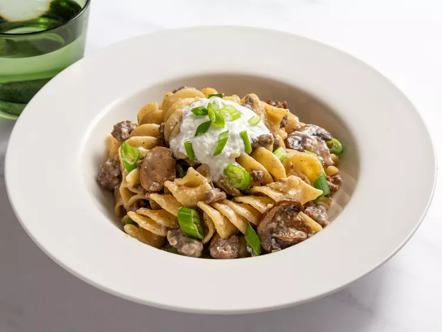

Return To Main Page
Ground Beef Stroganoff Noodles

What Is It?
These ground beef stroganoff noodles are a shortcut version of classic beef stroganoff
in a one-pan version.
The ultimate comfort food with flavorful ground beef,
mushrooms, and egg noodles.
Ingredients
- 1 tablespoon unsalted butter
- 1 tablespoon vegetable oil
- 1 cup thinly sliced mushrooms
- 1 teaspoon salt, plus more to taste
- ½ cup diced onion
- 1 pound ground beef
- freshly ground black pepper
- 1 pinch cayenne pepper
- 2 cloves minced garlic
- 1 ⅓ tablespoons flour
- 2 tablespoons vodka (Optional)
- 2 ½ cups beef broth, or as needed
- 1 cup water
- 2 ½ cups egg noodles
- ½ cup sour cream, plus more for serving
- 2 tablespoons fresh sliced chives or green onions